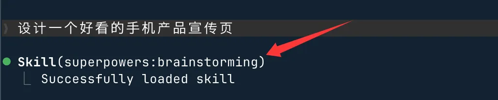

Superpowers
SuperpowersはAIプログラミングツール向けの開発プロセススキルパックです。AIがコードを書く前に要件を整理し、計画を立てることで、修正を繰り返す回数を減らします。
AIがコードを書く際のよくある課題
要件を説明した後、AIがすぐにコードを書き始め、数百行書いてから方向がずれていることに気づく--境界条件が処理されていない、インターフェースのスタイルが合わない、重要なロジックを誤解している。
その後、行ったり来たり修正を繰り返し、軌道修正にかかる時間が最初にコードを書いた時間よりも長くなることがあります。
さらに厄介なのは複雑な要件です。複数のモジュールに関わり、段階的な実装が必要な場合、AIが書いているうちに脱線し、気づいたときには多くのファイルを変更してしまい、ロールバックも面倒です。
問題の根本原因
AIプログラミングツールが要件を受け取った後のデフォルトの動作はすぐにコードを書くこと。
単純なタスクなら問題ありませんが、少し複雑な要件の場合、「すぐに書く」というやり方は重要なステップを飛ばしてしまいます：要件を明確にする。
要件の中の曖昧な部分は、最終的にすべてコードの問題になります。AIは自ら質問せず、体系的な実装計画もなく、現在の理解のまま進み、ずれたら戻って修正するだけです。
AIがコードを書く前に要件を整理し、実装計画を立て、境界を確認してから着手できれば、プロセス全体がはるかに安定します。
Superpowersとは
SuperpowersはAIプログラミングツール向けの開発プロセススキルパックです。
ソフトウェア開発の重要な要素--要件整理、実装計画、テスト駆動開発、コードレビュー、ブランチ管理--をスキルファイルとしてまとめ、AIプログラミングツールに組み込むと、AIは適切なタイミングで対応するワークフローを自動的に起動するため、毎回手動で指示する必要はありません。
一言で言うと：AIに開発方法論をインストールして、プロセスに従って作業させる。要件を受け取ったらすぐに書き始めるのではなく。
| プロジェクト | 情報 |
|---|---|
| GitHubリポジトリ | https://github.com/obra/superpowers |
| ライセンス | MIT |
| 対応ツール | Claude Code、Cursor、Codex CLI、Codex App、Gemini CLI、GitHub Copilot CLI |
ワークフロー概要
Superpowersのコアプロセスは4つのフェーズに分かれており、各フェーズには明確な目標と成果物があります。AIはどのステップも飛ばしません。

| フェーズ | 名前 | 内容 | 成果物 |
|---|---|---|---|
| 1 | 要件整理 | AIが逆に質問をして曖昧な点を明確にし、設計案を分割して表示して確認を取る | 確認済みの要件ドキュメント |
| 2 | 実装計画 | 作業を2〜5分単位の具体的なタスクに分割し、各タスクにファイル、コード、検証方法を含める | 実行可能なタスクリスト |
| 3 | タスクの実行 | タスクを順番に実行し、各タスク完了後に二段階チェック（仕様+品質）を行う | 検証済みのコード |
| 4 | コードの納品 | すべてのタスクが完了し、コードが設計仕様を満たし、品質が合格であることを確認する | 納品可能なコード |
インストール方法
AIプログラミングツールによってインストール方法が異なるため、使用しているツールに応じて対応する方法を選択してください。
Claude Code（推奨方法）
Claude Codeは公式プラグインマーケットから直接インストールできます。
# 从官方插件市场安装（推荐） /plugin install superpowers@claude-plugins-official
Superpowers自身のマーケットからもインストールできます。
# 添加 Superpowers 市场 /plugin marketplace add obra/superpowers-marketplace # 从 Superpowers 市场安装 /plugin install superpowers@superpowers-marketplace
Cursor
CursorのAgentダイアログにコマンドを入力してインストールします。
# 在 Agent 对话框里输入 /add-plugin superpowers
またはプラグインマーケットで検索してsuperpowersインストールします。
Codex CLI
# 打开插件管理界面 /plugins # 搜索 superpowers，选择 Install Plugin
Gemini CLI
# 通过扩展安装 gemini extensions install https://github.com/obra/superpowers
各ツールに個別にインストールする必要があります。Claude CodeにインストールしてもCursorには反映されません。
| ツール | インストール方法 | 追加のマーケットが必要か |
|---|---|---|
| Claude Code | /plugin install | 公式マーケットで可、Superpowersマーケットも可 |
| Cursor | /add-pluginまたはプラグインマーケットで検索 | 不要 |
| Codex CLI | /pluginsインターフェースで検索してインストール | 不要 |
| Gemini CLI | gemini extensions install | 不要 |
インストール後の実際の体験
インストール後、新しいコマンドを覚える必要も、作業習慣を変える必要もなく、いつも通り要件を説明するだけで、Superpowersがバックグラウンドで自動的に関与します。
新機能を開始するとき
要件を説明すると、AIはすぐにはコードを書き始めません。
まず逆にいくつか質問をして曖昧な点を明確にし、設計案をいくつかのセクションに分けて確認のために提示します。
このフェーズはbrainstorming、目的は着手前に要件を揃えることです。あなたが確認した後、AIは次のステップに進みます。
実装段階に入る
要件の確認が完了すると、AIは実装計画を生成し、作業を各2〜5分の具体的なタスクに分割します。
各タスクには、対象ファイル、書くコード、検証方法が含まれます。
計画の粒度は「ジュニアエンジニアがこの説明を受け取れば実行できる」レベルまで細かくします--この設計は、subagent（サブエージェント）が各ステップを確実に実行し、実行中の理解のずれを減らすためのものです。
実行段階
計画の確認後、AIはタスクを順番に実行します。
各タスク完了時に行うのは二段階チェック：まず設計仕様に合っているかを確認し、次にコード品質を確認します。
問題が見つかった場合は現在のタスク内で解決し、問題を抱えたまま次に進みません。
実行プロセス全体でそばにいる必要はなく、AIに進めさせるだけで、行き詰まった場合は一時停止してあなたに尋ねてきます。
インストールの確認
たとえばClaude Codeで次のように入力します：
見栄えの良いスマホ製品のプロモーションページをデザインする
すると superpowers:brainstorming が表示され、インストールが成功したことがわかります：

典型的な初心者シナリオ：Todoアプリをゼロから開発する
CRUD（追加・削除・更新・検索）をサポートするTodoアプリ（React + ローカルストレージ）を実装したいとします。
従来の直接プロンプト方式：
用 React 帮我写一个 Todo App。
AIは通常、一度に大量のコードを生成し、表面的には機能が揃っているように見えますが、実際には以下の問題が存在する可能性があります：
- 状態管理が不適切
- ユニットテストが不足
- 境界条件（空リスト、並行操作など）が処理されていない
- 1か所を変更すると他のバグを引き起こしやすい
- 結果としてコードが保守しにくくなり、その後の反復開発のコストが高くなります。
Superpowersの構造化された方法はまったく異なり、AIがすぐにコーディング段階に入るのではなく、以下のステップで進めます：

コアワークフローの詳細
Superpowersは3つのコアワークフローを提供し、開発におけるさまざまな段階をそれぞれカバーします。
テスト駆動開発（TDD）
test-driven-developmentこのスキルはAIにRED-GREEN-REFACTORの順序を強制します。
まず失敗するテストを書き、それが失敗するのを確認し、次にそれを通過させるための最小限のコードを書き、最後にリファクタリングします。
AIがテストを書く前にコードを書いてしまった場合、このスキルはそれを削除してやり直すよう要求します。
| ステップ | 名前 | 内容 |
|---|---|---|
| RED | 失敗するテストを書く | 現在は失敗するテストケースを書き、期待される動作を明確にする |
| GREEN | 最小限のコードで通す | テストが通る最小限のコードだけを書き、余計なものは書かない |
| REFACTOR | リファクタリング | テストによる保護のもとでコード構造を最適化し、テストが引き続き通ることを確認する |
TDDの習慣がないプロジェクトでは、このプロセスは少し戸惑うかもしれませんが、後になってバグが見つかり戻って修正するという状況を確実に減らせます。
Git Worktreeによる分離
using-git-worktrees設計の確認後、分離された作業ブランチを自動的に作成します。
これによりAIのコード変更がメインブランチを直接汚染せず、複数タスクの並行処理やロールバックが必要な場合に便利です。
Git WorktreeはGitのネイティブ機能で、同じリポジトリ内で複数のブランチを異なるディレクトリに同時にチェックアウトできます。git stash + git checkoutよりクリーンです。
体系的なデバッグ
systematic-debuggingこのスキルはAIが問題に直面したときに、推測ではなく4ステップの調査プロセスを実行させるものです。
エラーに遭遇したら、まず根本原因を特定してから対処する。いきなりコードを変更して試すのは避ける。
| 手順 | 何をするか | なぜ |
|---|---|---|
| 1. 問題を再現する | 安定して再現できることを確認し、発生条件を記録する | 再現できないバグは修正を検証できない |
| 2. 根本原因を特定する | 範囲を段階的に絞り込み、問題のある具体的なコード行を見つける | 対症療法の修正は新たな問題を引き起こす |
| 3. 修正を実施する | 根本原因に基づいてコードを修正する | 修正範囲を最小限にする |
| 4. 修正を検証する | 問題が解決され、新しい問題が発生していないことを確認する | 修正が有効であることを確認する |
使用前に知っておくべき点
プロセスが長くなる
Superpowers を導入すると、簡単な要件でも先に要件整理と計画立案を行ってからコードを書き始める。
小さなバグ修正や1行の設定追加だけなら、このプロセスは冗長に感じられる。
Superpowers は一定の複雑さを持つ機能開発に適している。簡単なタスクは AI に直接書かせればよく、この一連のプロセスを適用する必要はない。
事前の議論への参加が必要
brainstormingこの段階では、あなたが質問に答え、方針を確認する必要がある。
「AI に投げて完全自動でやり遂げさせる」と考えているなら、この設計はあまり快適ではないだろう。
Superpowers の位置付けは人と AI が協力して開発することであり、全自動のコード生成ではない。
ツールによって体験が異なる
README には Claude が2時間計画から逸脱せずに実行できると書かれているが、このパフォーマンスはツール、プロジェクト、タスクの複雑さによって異なり、実際の体験には差がある。
| 注意点 | 説明 | 適用シーン |
|---|---|---|
| プロセスが長くなる | 簡単な要件でも先に整理してから着手する | 中程度以上の複雑さを持つ機能開発 |
| 議論への参加が必要 | ブレインストーミング段階ではあなたが方針を確認する必要がある | 前期の調整に時間をかけられる開発者 |
| 体験の違い | ツールやプロジェクトによって性能が異なる | すべての利用者が理解しておく必要がある |
クリックしてノートを共有
ノートは本記事の内容を拡張したものである必要があります！
記事投稿は、ここをクリック
登録招待コードの取得方法
ノートを共有する前にログインが必要です！
登録招待コードの取得方法